Introdução à Comunidade Quilombola de Barrocas
Localizada a 15 km ao sul de Vitória da Conquista, na Bahia, encontra-se a vibrante comunidade quilombola de Barrocas. Situada às margens da BA-263, a estrada que conecta Vitória da Conquista a Itambé, essa comunidade possui uma história rica e profundamente enraizada na cultura afro-brasileira. Fundada na década de 1920, Barrocas emergiu como um refúgio para aqueles que buscavam escapar da opressão e encontrar liberdade em suas terras.
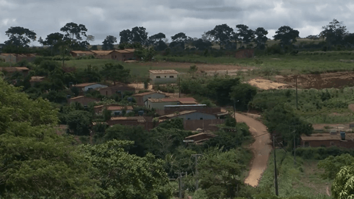
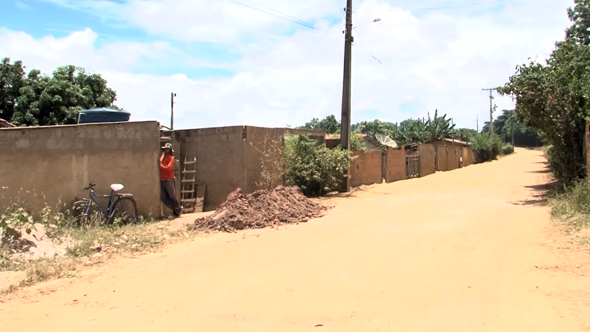
Ao longo dos anos, Barrocas cresceu e se desenvolveu, tornando-se o lar de mais de 1400 moradores dedicados a preservar suas tradições e valores culturais. O nome "Barrocas" remonta aos tempos antigos, quando os moradores trabalhavam na produção de tijolos e telhas, notando os buracos na região e dando à fazenda o nome de Fazenda Barrocas.
Apesar dos desafios enfrentados ao longo das décadas, a comunidade de Barrocas perseverou, mantendo viva sua identidade como remanescentes de quilombo. Sua importância cultural se estende além das fronteiras físicas da comunidade, influenciando e enriquecendo a diversidade cultural da região de Vitória da Conquista e além.
História, Tradições e Estilo de Vida da Comunidade Quilombola de Barrocas
A história da comunidade quilombola de Barrocas é um testemunho de resistência e resiliência. Desde sua fundação na década de 1920, os moradores enfrentaram desafios significativos, trabalhando incansavelmente sob o sol escaldante para garantir sua sobrevivência. Inicialmente, o acesso à comunidade era difícil, com estradas precárias e apenas o carreirinho como via de transporte.
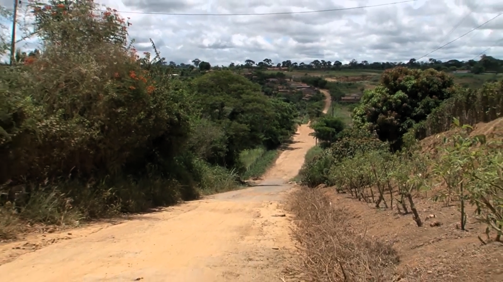
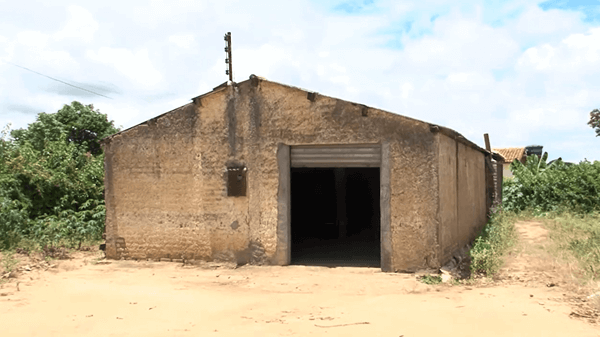
No entanto, os moradores perseveraram, dedicando-se à agricultura e à produção de alimentos como mandioca, principal fonte de subsistência. A vida na comunidade girava em torno da casa de farinha, onde as famílias se reuniam para processar a mandioca e produzir derivados como goma, beijú e massa de aipim. Essas atividades não apenas sustentavam a comunidade, mas também fortaleciam seus laços sociais e culturais.
As tradições culturais são uma parte essencial da identidade de Barrocas. A religião católica é predominante, com a Igreja Nossa Senhora da Piedade desempenhando um papel central na vida espiritual da comunidade. Os moradores mantêm vivas as tradições religiosas, como montar presépios e rezar os Benditos, enquanto celebram festividades como o terno de reis.
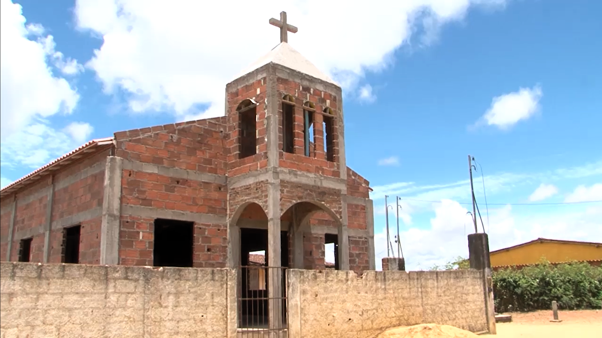
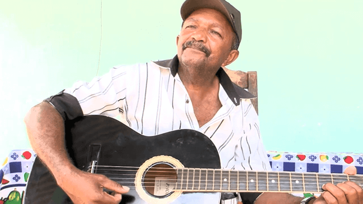
Além disso, a música é uma forma de expressão profundamente enraizada na cultura de Barrocas. Mesmo diante das dificuldades, os moradores encontram tempo para se reunir, compartilhar histórias e relembrar o passado por meio da música, mantendo viva a herança cultural que define sua comunidade.
O estilo de vida em Barrocas reflete os valores de solidariedade, respeito pela natureza e orgulho de suas raízes africanas. Apesar dos desafios enfrentados, os moradores permanecem unidos, determinados a preservar sua identidade cultural e garantir um futuro próspero para as gerações vindouras.
Documentário PEJ Adélia Quilombo de Barrocas
O vídeo a seguir foi criado por Adelia Silva, como parte de seu Trabalho de Conclusão de Curso (2018), em homenagem à comunidade do povoado de Barrocas e, em especial, aos seus moradores. A autora agradece a todos que concederam entrevistas e contribuíram para a realização deste projeto.
Vídeo disponível no canal da autora: acessar
Galeria de imagens da comunidade
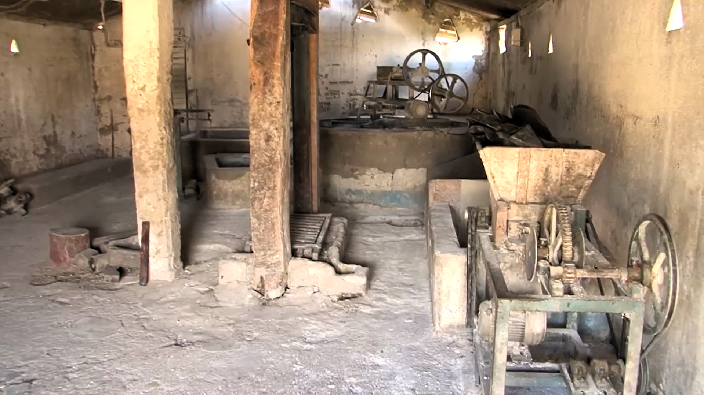
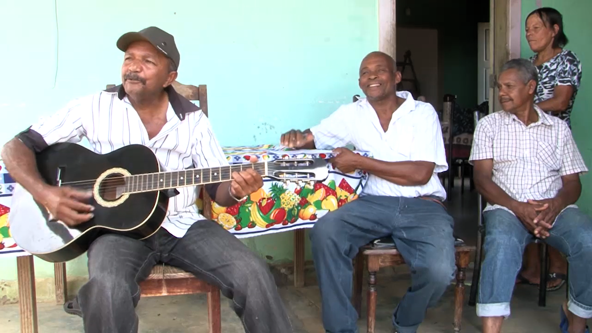
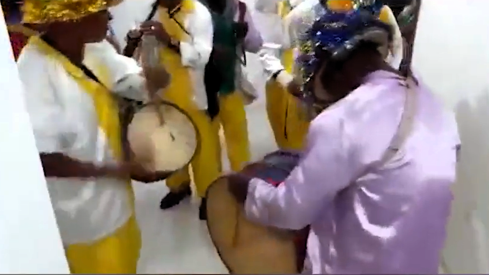
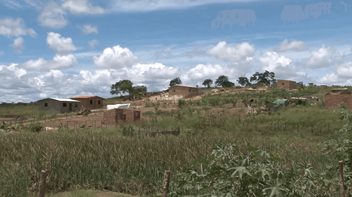
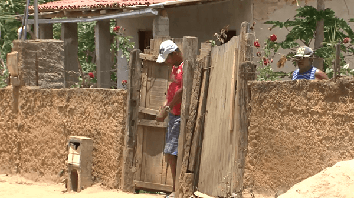
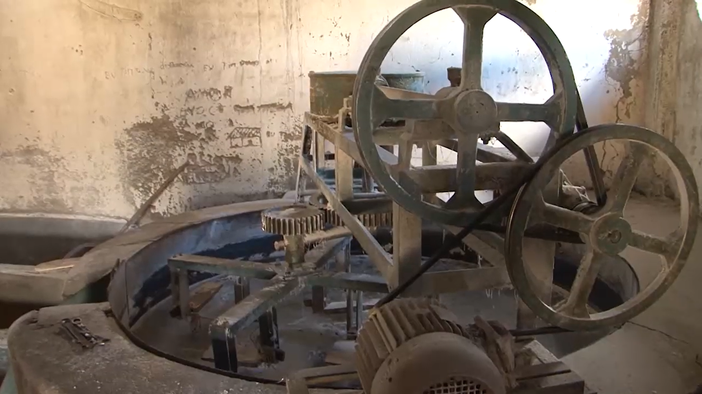
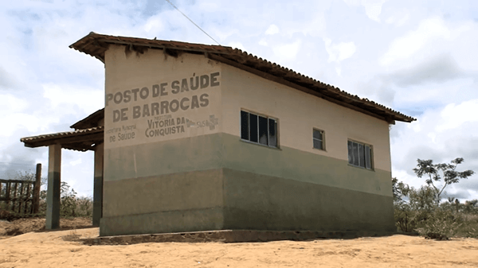
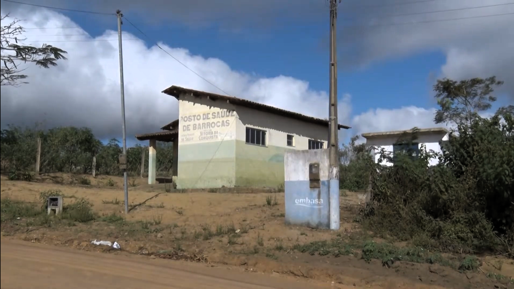
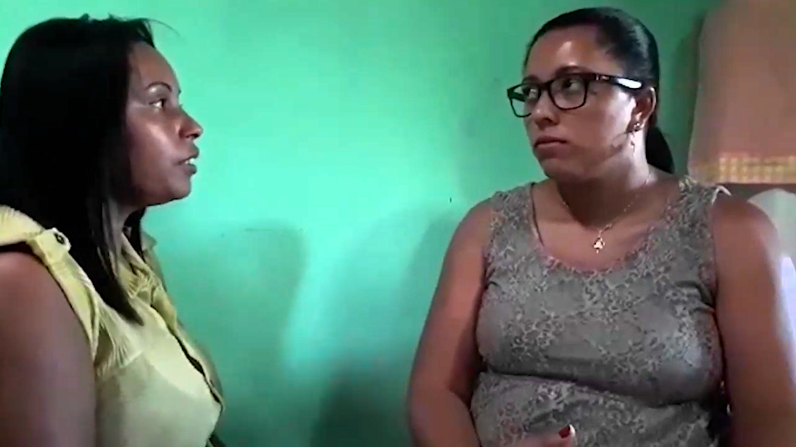
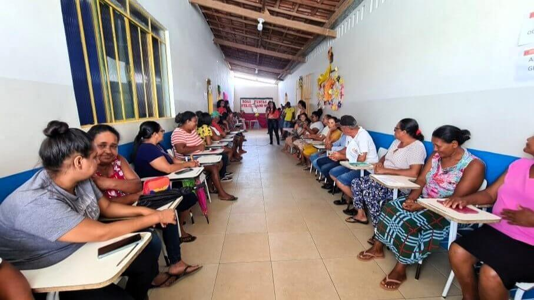
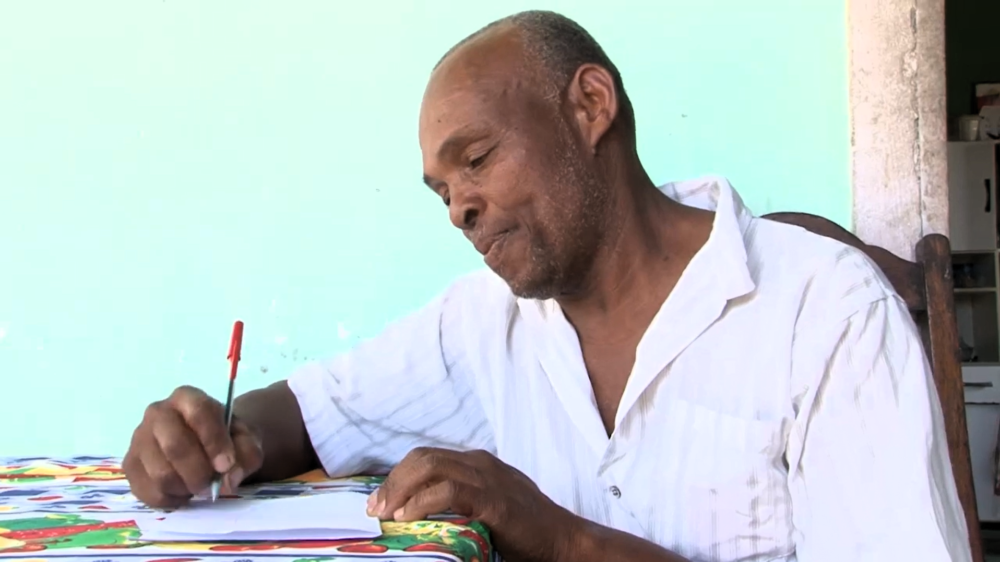
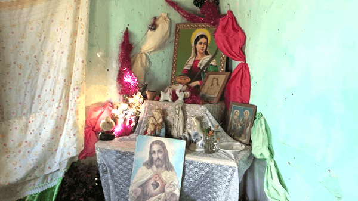
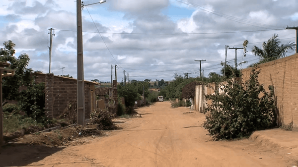
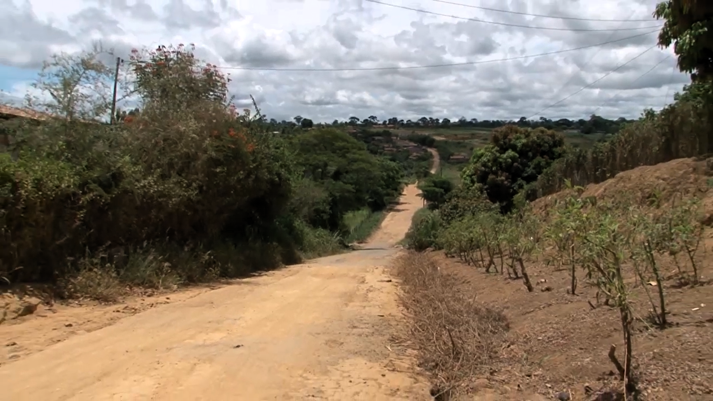
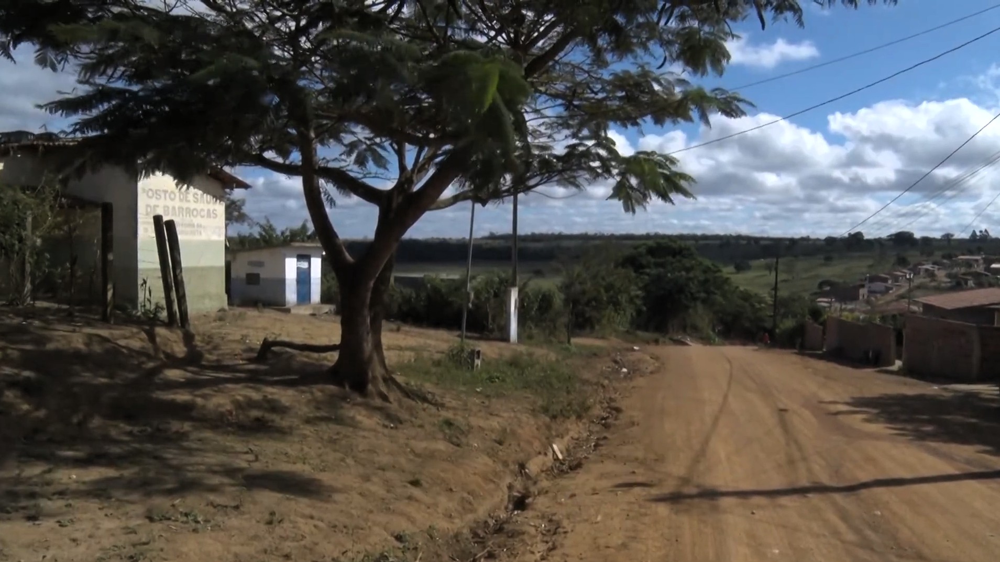
Autoria e Propósito do Projeto
O projeto tem como objetivo apoiar a sociedade na busca por soluções que promovam melhorias para grupos específicos ou para a comunidade em geral. Em particular, este site foi idealizado para abordar a falta de visibilidade e reconhecimento da rica cultura, história e tradições da comunidade quilombola de Barrocas.
Eu penso que, muitas vezes, comunidades quilombolas enfrentam marginalização, discriminação e pouca representatividade nos meios de comunicação e na sociedade em geral. Dessa forma, ao oferecer um conteúdo que valoriza e preserva aspectos culturais, históricos e tradicionais dessa comunidade, este website contribui para fortalecer a identidade quilombola e promover maior reconhecimento e respeito por essa herança tão significativa.